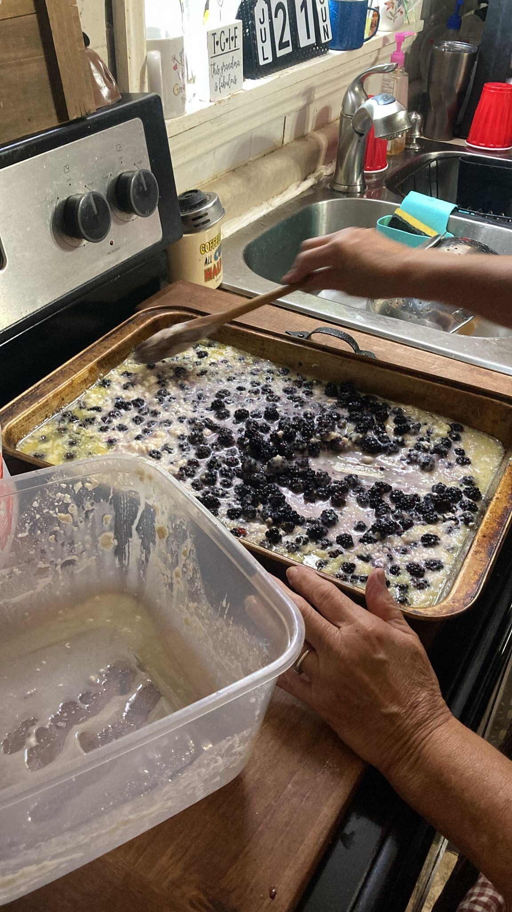

- Pick a bunch of blueberries and wash them. To wash them, sprinkle come baking soda on them and rinse it off.
- Get an oven tray and spray olive oil on it. Melt 2 sticks of salted butter in the microwave and pour them on the dish.
- Make the batter: Mix 2 cups of milk, 2 cups of sugar, 2 cups of flour, 2 lids of the vanilla extract.
- Heat up the oven at 400 degrees Fahrenheit.
- Add some batter to the dish, then the berries, and then the batter again. Keep them a bit covered.
- Put the dish in the oven at 400 for about 20mins. Then turn it down to 375 for another 20 minutes or until it is done.
- NOTE 1: We picked A LOT of blackberries. If you pick less of them, then just halve all of the amounts: 1 stick of butter, 1 cup of sugar, 1 cup of flour, 1 cup of milk, 1 lid of vanilla. And leave in oven less time, around 35mins total.
- NOTE 2: The pictures above had too many blackberries, mawmaw had to take some out before putting it in the oven, so that it would not be dry.
- NOTE 3: Best if served with vanilla ice cream.
